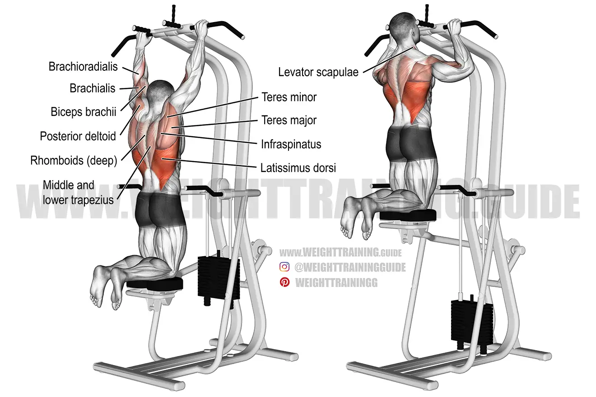

T Bar Row : Gardez votre dos immobile, le mouvement est fait par les bras. Vous pouvez relâcher vos épaules en bas du mouvement et les contracter davantage en haut du mouvement. Laissez vos bras aller vers l'avant le plus possible pour vraiment avoir un bon étirement du dos.
Certaines machines ont un endroit pour reposer le ventre. C'est essentiellement la même chose, vous pouvez reculer un peu vers l'arrière, créant une arche dans votre dos sur celles-ci.
Incline Dumbbell Row : Si vous ne disposez pas de ces machines dans votre salle de sport, cette variation est tout aussi efficace. Les mêmes conseils s'appliquent pour l'arc du dos également.
Seated Cable Row : Garder le bas du dos stable, il ne bouge pas beaucoup, aller le plus loin dans l'étirement du muscle et faite une petite pause de 1 ou 2 secondes, vous pouvez même aller plus que dans la vidéo si dessus.
Normal Grip Pulldown : Ne vous balancez pas, gardez une posture droite au départ du mouvement et reculez un peu en bombant le torse jusqu'à ce que la barre touche votre torse. C'est comme une traction (pull-up), donc vous pratiquez votre technique en faisant les deux. Il y a plusieurs façons de prendre la barre. Essayez-les toutes, elles donnent un stimulus au dos très similaire ; prenez celle que vous préférez.
Aussi, ne vous laissez pas emporter à la dernière répétition. La partie négative du mouvement et l'étirement sont les plus bénéfiques pour le gain musculaire, et plus vous êtes près de l'échec, plus le stimulus est important. Donc, ne brisez surtout pas la forme.
Parallel Grip Pullup : Comme dit plus tôt, c'est un mouvement similaire au pulldowns, cependant il faut gérer plus de stabilité, ici aussi ne vous balancez pas, si cela est trop pour vos abdo, il y a des machines de pull-up assistées (image ci dessous). Le poids mit égale le poids retiré. Vous pouvez faire l'inverse et rajoutez du poids avec une ceinture avec du poids attaché ou si vous en avezpas à disposition, les tenir avec vos jambes, mais cela peut vous faire perdre le l'énergie à garder le poids stable et en place
Barbell Shrug : Prenez un poids avec lequel vous pouvez descendre vos bras tout en bas et les remonter tout en haut, tout en faisant une petite pause de 1 seconde à chaque extrémité.
Dumbbell Shrug : Variation du précédent, garder la même forme.
Cable Shrug : Variation du précédent, garder la même forme.